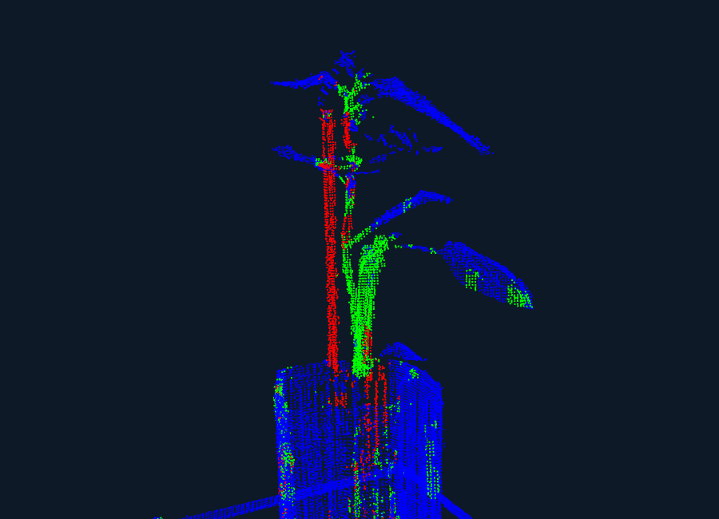
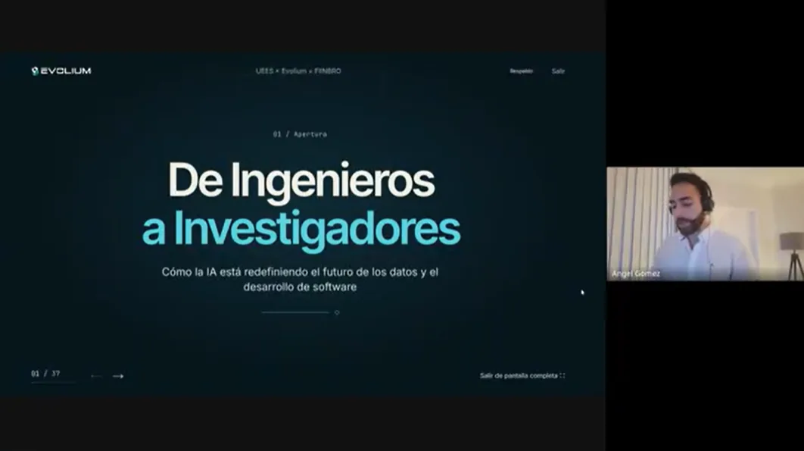
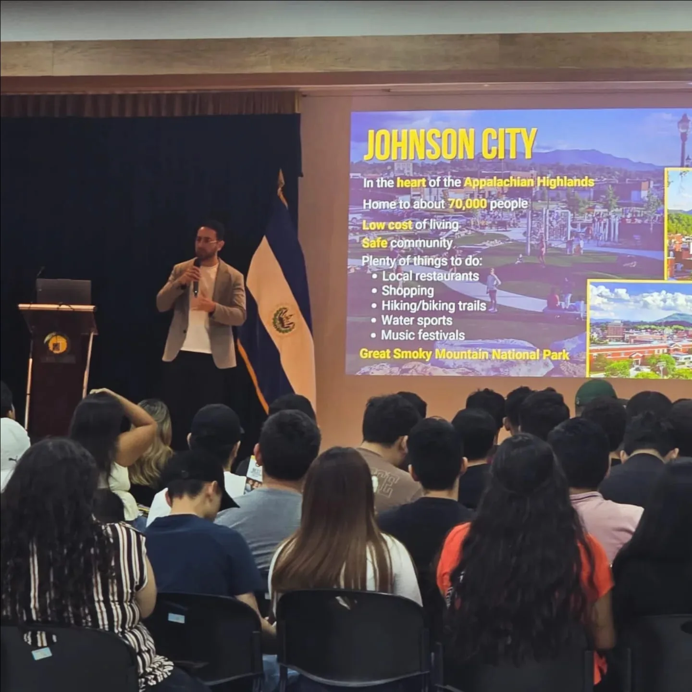
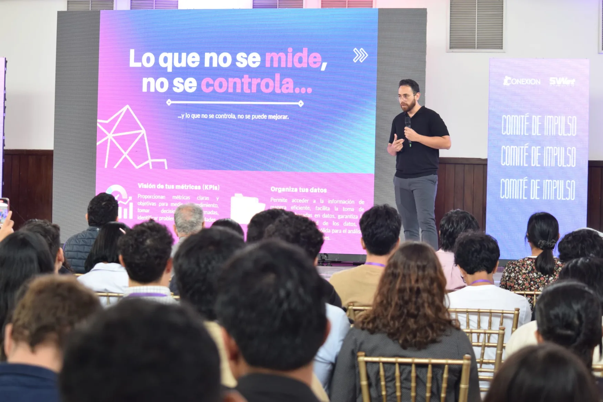

Data & AI governance
How governance practices, organizational readiness and accountability influence AI implementation and long-term use.
Data & AI systems · Applied research
Data & AI Governance Lead · M.S. Applied Data Science
I build the data systems that organizations rely on, and I study what makes AI useful, reliable and accountable beyond the prototype stage.
My work spans enterprise data platforms, AI governance and applied machine learning. At CenterPoint Energy, I lead hands-on work on governance tooling, data quality and controls for AI-enabled workflows. Before that, I worked on geometric deep learning for plant segmentation through an East Tennessee State University collaboration with Oak Ridge National Laboratory.
Those experiences have brought my interests together: how data governance, technical safeguards and organizational decisions shape whether AI systems succeed in practice.
01 / Research
Questions grounded in both applied research and the work of building enterprise systems.
How governance practices, organizational readiness and accountability influence AI implementation and long-term use.
Tool permissions, human oversight, traceability and evaluation for AI systems that act on real data and workflows.
Representations and evaluation for noisy, imbalanced data, with a particular interest in geometric and 3D perception.
Universidad Evangélica de El Salvador
A proposed empirical study of whether data and AI governance maturity helps explain why some organizational AI initiatives move into sustained use while others remain experiments. The research design includes a governance maturity framework and a quantitative study.
Proposal stage. No completed empirical results or publication are claimed.
East Tennessee State University · Oak Ridge National Laboratory collaboration
As part of a research team, I developed and evaluated a graph-based deep learning pipeline using PyTorch Geometric, local geometry descriptors and class-aware training. The task was to distinguish plant organs in point clouds affected by noise, occlusion and class imbalance.
Our best reported configuration reached 65.58% validation mean IoU and 82.27% stem recall under the project evaluation setup.
Completed project; the linked manuscript and code are not a peer-reviewed publication.
Research repositorySegmentation demonstration

Universidad Evangélica de El Salvador · FUNPRES
Co-authored research on a data model and Power BI reporting for the Aprendo para Brillar education program. The work considered how better access to consistent information could help with monitoring, evaluation and program decisions.
02 / Selected work
Systems I have built or helped deliver, with an emphasis on what they do and where responsibility matters.
CenterPoint Energy · 2026
I designed and launched a self-service governance workspace that brings together metadata, lineage, data quality, reporting, support and AI workflows. It serves more than 250 active Data & AI users and helps teams manage work that previously sat across separate tools.
Python · APIs · BigQuery · Atlan · Monte Carlo
CenterPoint Energy · 2026
Worked across security, identity and platform teams to evaluate enterprise AI integrations. I focused on access boundaries, tool permissions, audit trails and approval points, including controls around LLM-connected data systems.
AI governance · IAM · MCP · Evaluation
FIINBRO · 2026
Designed and led a mortgage-operations platform with office-scoped dashboards, client intake, case tracking and document review. It includes controlled pilots for bank-form preparation; bank submission is not automated.
Next.js · FastAPI · AWS · PostgreSQL
03 / Talks
I enjoy speaking with students and engineers about data, research and the practical changes brought by AI.

· UEES & Evolium webinar
Discussed the shift from building software to asking stronger questions about how it is designed, evaluated and used.
Event archive
· Universidad Evangélica de El Salvador
Shared my experience studying Applied Data Science at East Tennessee State University and finding opportunities to work on research.

· DD Youth Expo
A practical introduction to using the data already available to ask better questions and make informed decisions.
04 / Background
A combination of research training, data engineering and building operational software.
CenterPoint Energy · Houston, TX
Oak Ridge National Laboratory collaboration · ETSU
East Tennessee State University
AES Corporation
Executel
The Office Gurus
East Tennessee State University · GPA 3.79/4.00
Universidad Evangélica de El Salvador
The current professional résumé includes recent platform engineering and enterprise AI work. The academic CV is a separate, earlier document.
View current résuméPrintable résuméRésumé WordAcademic CV (earlier version)Contact
I am interested in research conversations and collaborations in data governance, responsible AI, information systems and applied machine learning.
angelb.research@gmail.com